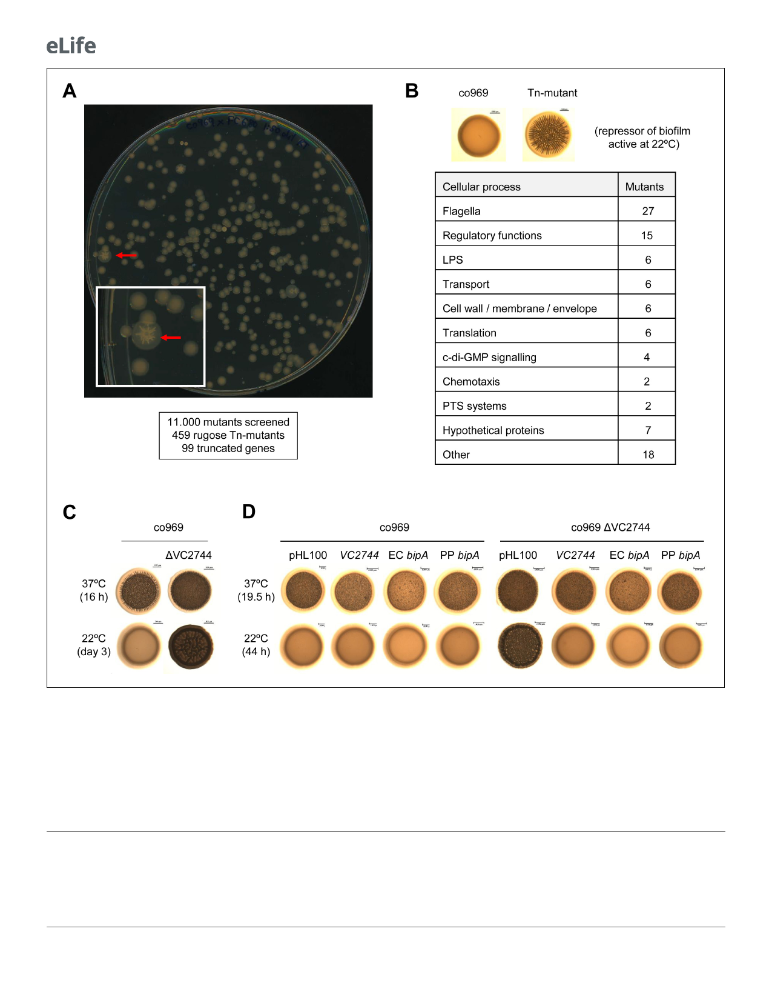

Research article
Microbiology and Infectious Disease
Figure 3. Transposon mutagenesis identifies VC2744 as a regulator of Vibrio cholerae colony morphology at 22˚C. (A) Representative image of an agar
plate used for the selection of V. cholerae co969 transposon mutants with a rugose colony phenotype (pointed with red arrows) at 22˚C. The number of
screened transposon mutants, rugose colonies selected, and final number of genes with insertions leading to truncations is indicated below. (B) Table
of transposon screen hits sorted by functional annotation. (C and D). Effect of VC2744 on co969 colony morphology. (C) Deletion of VC2744 in co969
results in a rugose colony phenotype at 22˚C. (D) Colony morphology at 37˚C and 22˚C of co969 and co969 DVC2744 carrying either pHL100-bipA, for
overexpression of V. cholerae co969 VC2744 from the isopropyl-b-d-thiogalactosidase-inducible Plac promoter, pHL100-ECbipA; or pHL100-PPbipA, for
overexpression of the bipA variants of Escherichia coli MG1655 K-12 or Pseudomonas putida KT2440, respectively, or the empty plasmid (pHL100).
Overexpression of the different BipA variants restored the smooth colony phenotype at 22˚C, while it only resulted in slightly decreased rugosity at 37˚
C.
pattern as for the protein incubated only at 37˚C, suggesting that temperature-dependent protein
folding changes in BipA that are likely irreversible.
Reduced BipA stability and protein levels at 37˚C suggested a potential proteolytic control mech-
anism. Therefore, we aimed to identify the BipA-targeting protease(s). Transposon mutagenesis
7 of 23